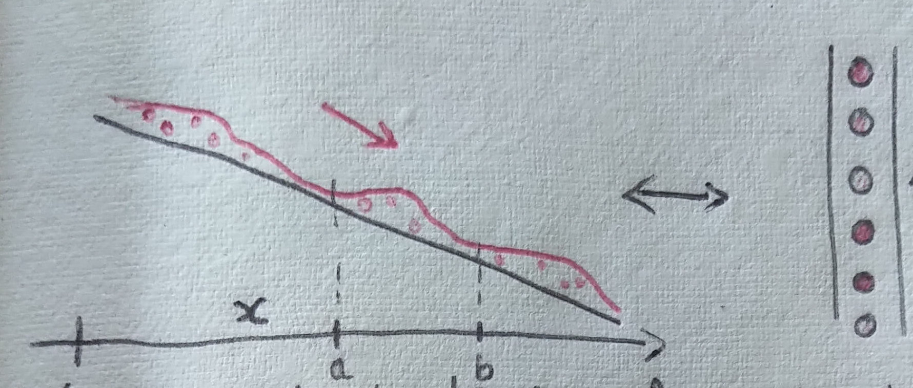
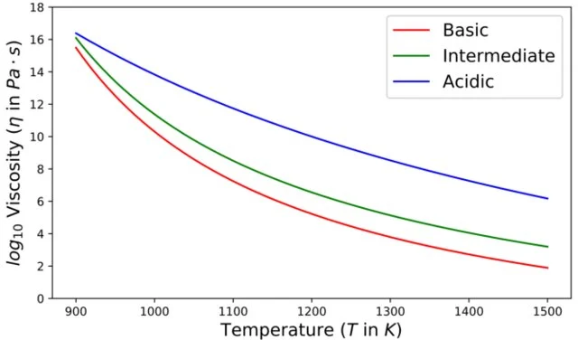
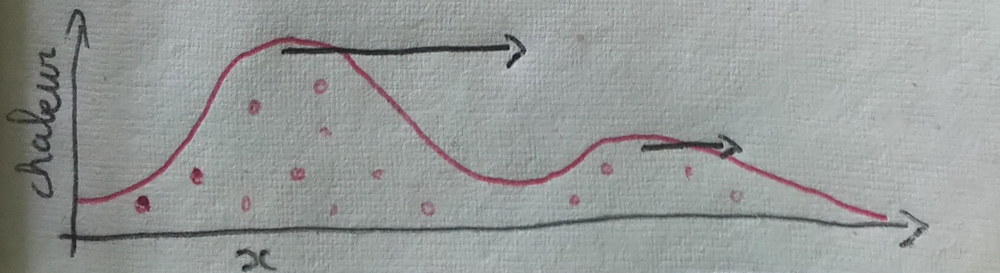
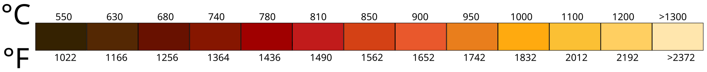
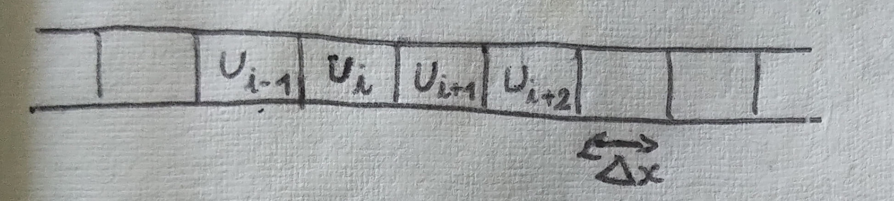
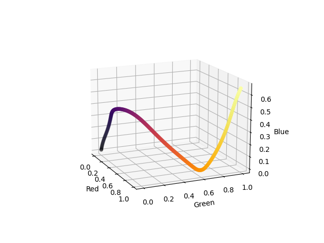
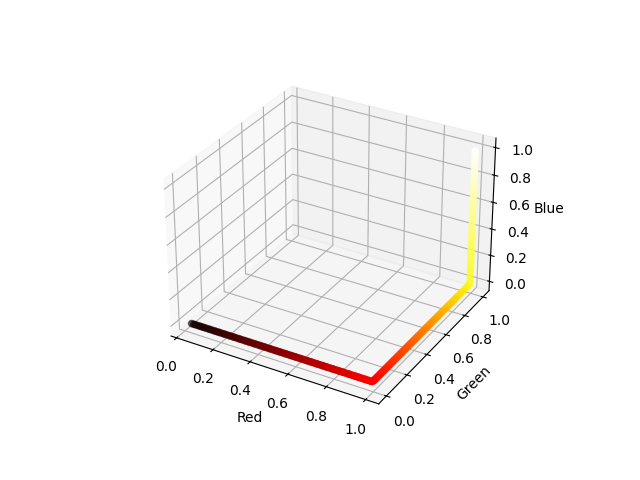

Lava flows
Introduction and presentation
The main idea of this project is to represent a flow of lava descending a constant slope on a programmable LED strip. This comes from an idea for the scenography of a music festival (Les ilots éléctroniques). In this project, you will find:
- a bit of maths for the modelisation of lava flows with an equation.
- a bit of basic physics in order to represent the radiation of lava.
- a few electronic concepts for the lighting of LEDs.
- open-source codes that are available here.
Some concepts are not completely explained... I apologize for that. However, I think there is some kind of beauty in the technicity of this page. I also need to mention that the mathematical models described here are not scientifically relevant. The idea here is to produce a basic model for a light show. The model must be sufficiently simple so that the code can run on an arduino. If you're interested in accurate modeling of lava flows using partial differential equations, I found a few papers about it online (see [BMDP23]), most of them deal with the shallow water equations which is sort of a more complicated version of the scalar conservation law presented here.
Naive modelisation
A lava flow as a heat conservation law
We want to model the flow of lava on a constant slope as drawn below.

Then, we can regroup the terms in the integrals using the fondamental theorem of analysis (and assuming that \(u\) is differentiable). We get: \[ \int_a^b \int_{t_1}^{t_2} \partial_t u(s,x) + \partial_x f(s,x) \textrm{d} t \textrm{d} x = 0. \] Using a Dubois-Reymond like argument (see the fundamental lemma of the calculus of variations), we get the following equation: \[ \partial_t u(t,x) + \partial_x f(t,x) = 0. \] This will be our prototype model in the following.
Burgers equation as a heat flux
Now, we need to determine the heat flux \(f\). Here, we rely on the fact that lava is more fluid when it is hotter.

A viscosity-temperature graph extracted from [JWL19] that is drawned after the experimental data of [WD90,GD03,V08].
One crucial feature of the Burgers equation above is that, for positive values of \(u\), the heat travels towards the right with a speed proportional to the heat itself. This causes an "overtaking" phenomenon: hot waves go faster than cooler waves.

Representation of the heat on a color scale
Now that we know how to model the heat corresponding to a flow of lava, the only question that remains is how to represent the heat on a LED strip. From the black-body radiation we know that the color emitted by the lava only depends on the heat, determined by Planck's law. Below is a correspondance between the color and the temperature of a metal used by blacksmiths.

In order to emulate Planck's law, we rely on the colorscale 'hot' defined in the matplotlib library.
Numerical experiments
Numerical scheme for the Burgers equation
The standard numerical scheme for such equations is called finite volume scheme. It exactly corresponds to a discretized version of the integral analysis we did above. More precisely, we denote \(u^n_i\) a discretized version of \(u \) where \(i\) is the index of the space discretization with step of size \( \Delta x \) and \(n\) is the index of the time discretization with step of size \(\Delta t\).

import random as alea
NUM_POINTS = 50
liste_values = [0 for _ in range(NUM_POINTS)]
in_value = 0.5
counter = 0
#Function corresponding to the numerical scheme with a boundary value
def propagate():
for i in range(len(liste_values)-1):
liste_values[-i-1] += 0.5*((liste_values[-i-2])**2 - (liste_values[-i-1])**2)
liste_values[0] += 0.5*((in_value)**2 - (liste_values[-i-1])**2)
#Main loop that computes 100 iterations of the scheme
while counter <= 100:
if counter % 10 == 0:
counter = alea.random()
propagate()
counter += 1
Numerical experiment with the colormaps
We want to implement the whole model on an arduino board using C language. This poses an issue as the matplotlib library only exist in Python. Therefore, we reproduce the behaviour of the colormaps in matplotlib in order to port the code in C in a second time. It is interesting to note that the cm (colormap) module of matplotlib in multiple different ways. The "perceptually uniform sequential" colormaps are colormaps design for giving the most accurate reading by the human perception also taking into account color-blind perception. For this kind of colormaps, the implementation of matplotlib simply give a fixed list of 256 colors as RGB values. The colormap object then select the color corresponding to a value between \( [0,1] \). Here is a visualization of the inferno colormap in the RGB cube.

On the contrary, most of the colormaps of matplotlib (including 'hot') are defined using a linear interpolation. The principle is simple, matplotlib defines a small number of control points in the color space and a function to interpolate between the control points. Below we reproduce the code corresponding to the 'hot' colormap.
_hot_data = {'red': ((0., 0.0416, 0.0416),
(0.365079, 1.000000, 1.000000),
(1.0, 1.0, 1.0)),
'green': ((0., 0., 0.),
(0.365079, 0.000000, 0.000000),
(0.746032, 1.000000, 1.000000),
(1.0, 1.0, 1.0)),
'blue': ((0., 0., 0.),
(0.746032, 0.000000, 0.000000),
(1.0, 1.0, 1.0))}
#A simple implementation of a linear interpolation
def mapp(a,x1,x2,y1,y2):
return y1 + (y2-y1)*(a-x1)/(x2-x1)
#A function mapping a number between 0 and 1 to a RGB 8-bit triplet
def generate_hot_map(a):
value = [0,0,0]
for color, key in enumerate(['red','green','blue']):
i = 1
while not (a <= _hot_data[key][i][0] and a >= _hot_data[key][i-1][0]):
i +=1
value[color] = int(255.0*mapp(a,
_hot_data[key][i-1][0],
_hot_data[key][i][0],
_hot_data[key][i-1][1],
_hot_data[key][i][1]))
return value
Here is a visualization of the hot colormap in the RGB cube.

Eventually, we give the following implementation in C.
//Slightly modified colorscale data in order to fit the LED behavior.
float hot_data[3][4][2] = {{{0.0, 0.0},
{0.365079, 1.000000},
{1.0, 1.0}},
{{0.0, 0.0},
{0.365079, 0.000000},
{0.746032, 0.85},
{1.0, 0.95}},
{{0., 0.},
{0.746032, 0.000000},
{1.0, 0.95}}};
float mapp(float a,float x1,float x2,float y1,float y2){
return y1 + (y2-y1)*(a-x1)/(x2-x1);
}
int hot_map_value(float a, int key){
int i = 1;
while(a > hot_data[key][i][0] || a < hot_data[key][i-1][0]){
i +=1;
}
return (int)(255.0*mapp(a,
hot_data[key][i-1][0],
hot_data[key][i][0],
hot_data[key][i-1][1],
hot_data[key][i][1]));
}
All the codes concerning the colormap tests are also available here.
References
Citations
- [BMDP23] Elisa Biagioli, Mattia de' Michieli Vitturi, Fabio Di Benedetto, Margherita Polacci, Benchmarking a new 2.5D shallow water model for lava flows, Journal of Volcanology and Geothermal Research, 2023.
- [WD90] Webb S. L. and Dingwell D. B., , JGR, 1990.
- [GD03] Giordano D. and Dingwell D., , Bull. Volcanol, 2003.
- [V08] Vetere F. et al., , JVGR, 2008.
- [JWL19] Fang, Jiaqi & Tian, Wei & Wang, Lei & Fa, Wenzhe & Liu, Xi., Modeling of steep-sided dome formation on Venus, Conference: Lunar and Planetary Science Conference, 2019.